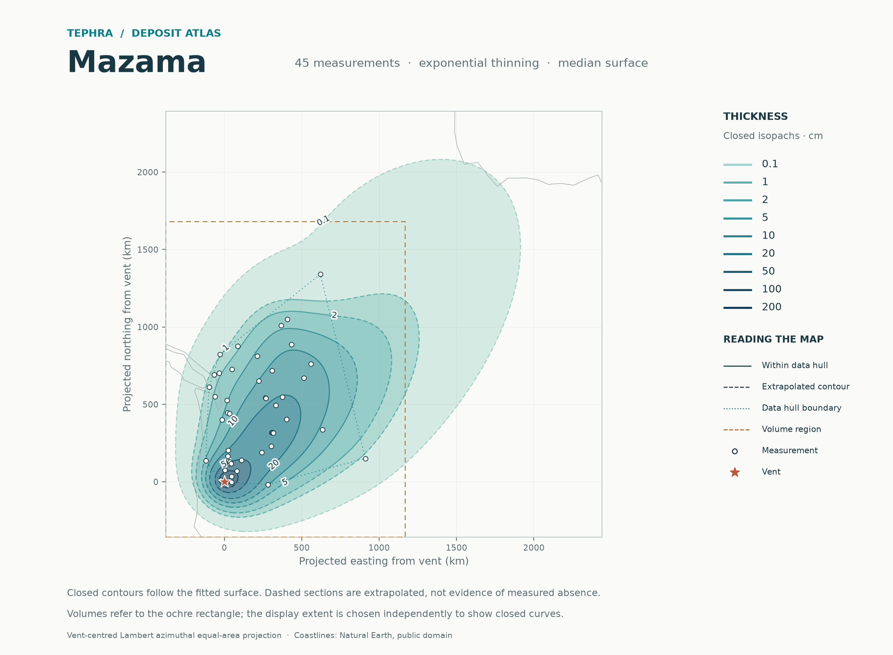
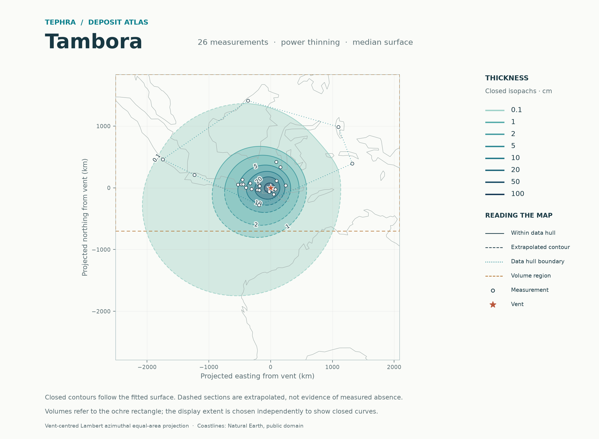
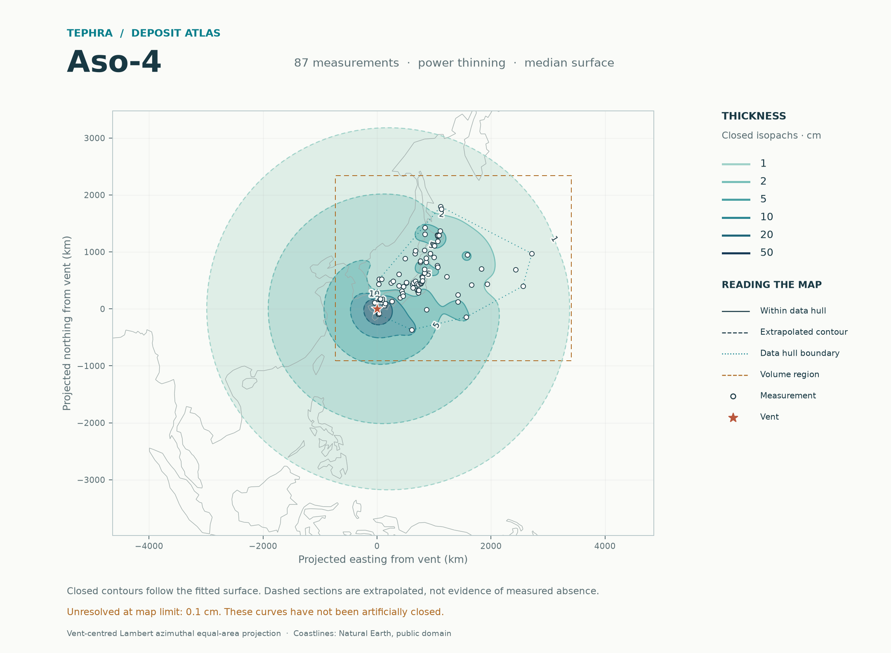
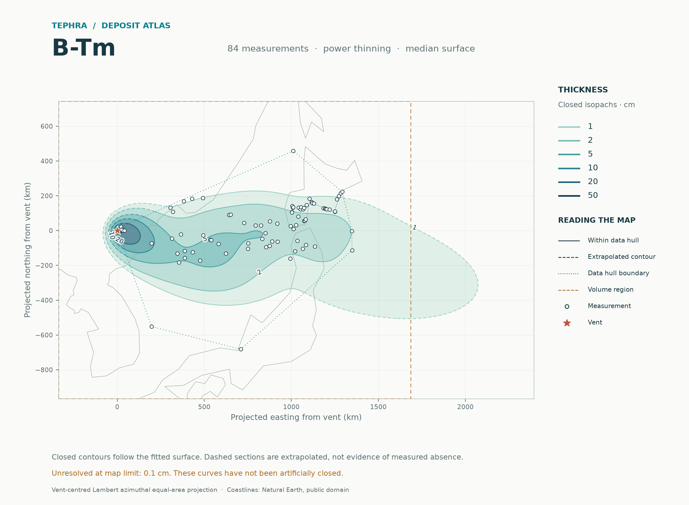

45 measurements · exponential fit
Mazama ↗
171.7 km³ expected regional bulk volume
Closed outer contour: 0.1 cm · 23% of regional volume outside data hullFour deposits. One simple statistical workflow. Explore closed thickness contours, the measurements behind them, and what the missing regions mean for volume.

171.7 km³ expected regional bulk volume
Closed outer contour: 0.1 cm · 23% of regional volume outside data hull
136.3 km³ expected regional bulk volume
Closed outer contour: 0.1 cm · 28% of regional volume outside data hull
646.5 km³ expected regional bulk volume
Closed outer contour: 1 cm · 68% of regional volume outside data hull
40.1 km³ expected regional bulk volume
Closed outer contour: 1 cm · 28% of regional volume outside data hullRegions differ between deposits. Volume outside the data hull measures reliance on extrapolation, not an error bound. Coverage describes held-out observations, not total-volume accuracy.